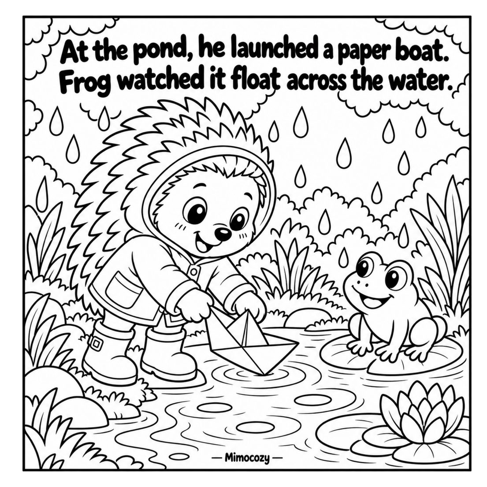
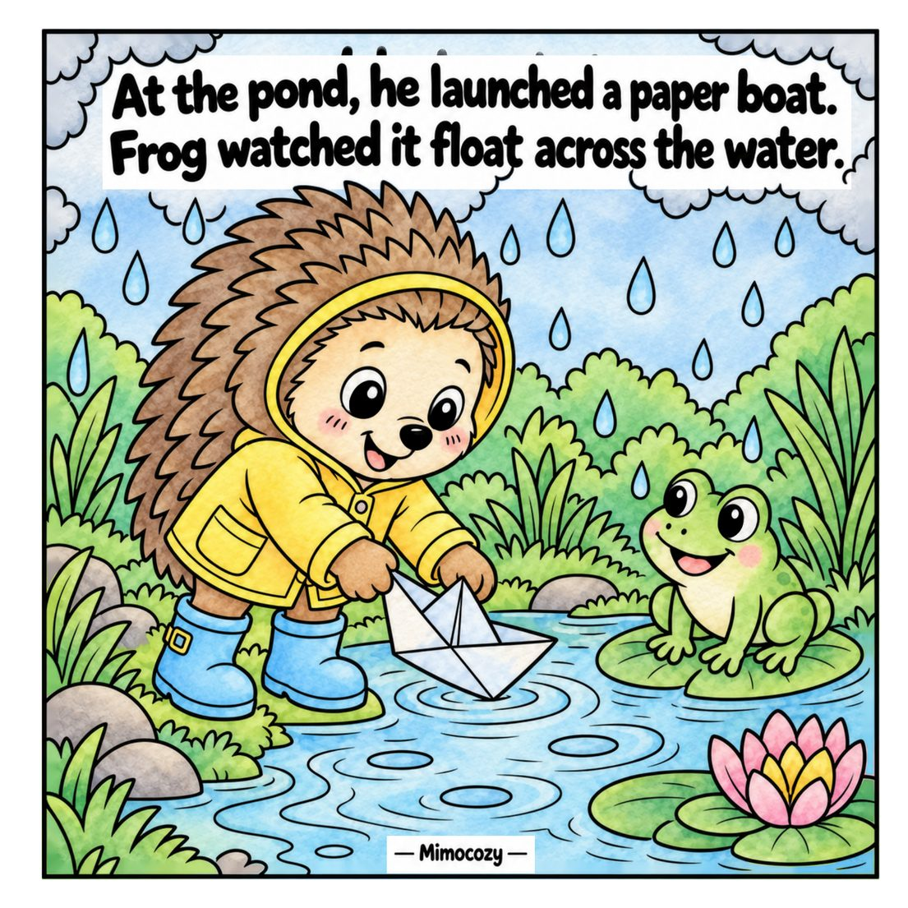
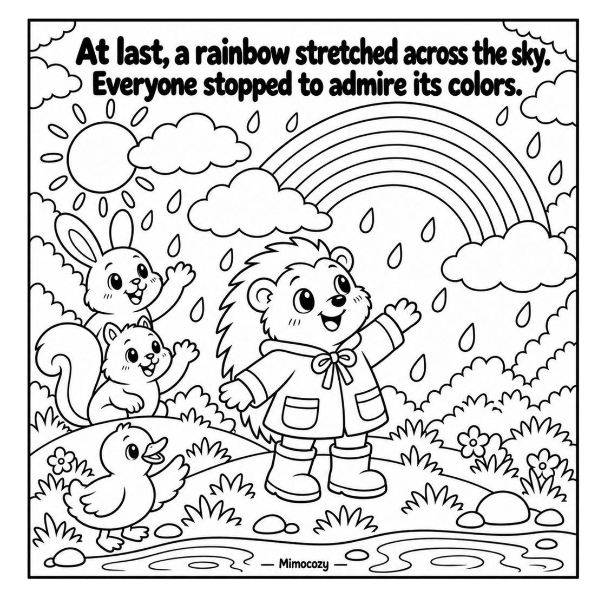
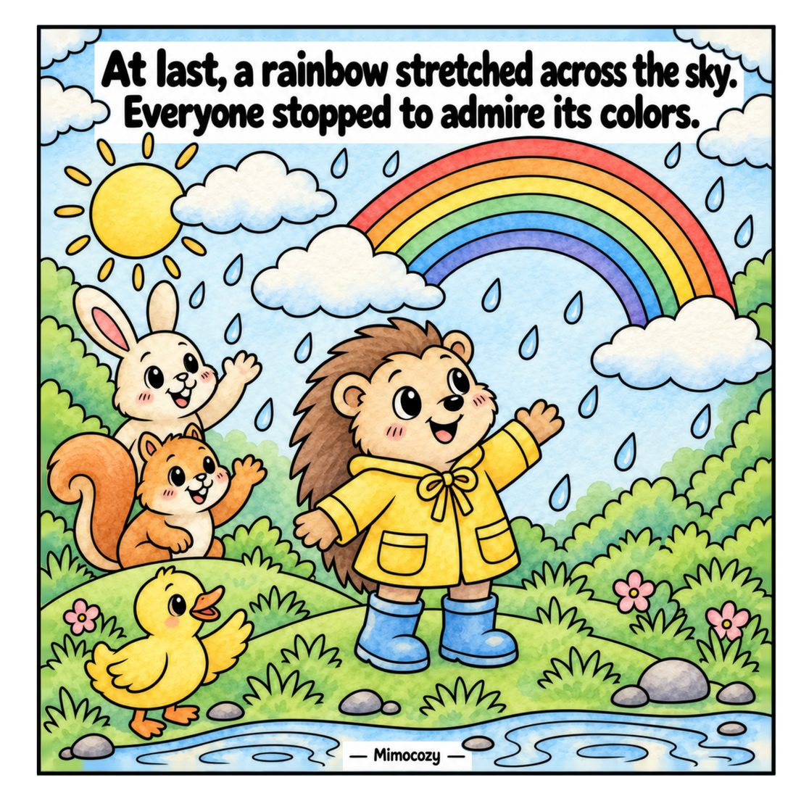

Um desfile nas poças: o Brambleboo veste a gabardina amarela para a chuva, os arco-íris e muita diversão com os amigos. Cenas grandes e fáceis, numa história suave de chuva.
Toca numa imagem para a ver em grande. Usa as setas ou desliza para mudar.
Dá vida às tuas páginas
Exemplos de pintura: a mesma página do livro, antes e depois de colorida. O livro traz as páginas a preto e branco.

Página original

Exemplo de pintura

Página original

Exemplo de pintura
Descobre a história
Histórias adoráveis em cenários mágicos.
Brambleboo and the Puddle Parade
Está a chover e o Brambleboo não podia estar mais contente. Com a gabardina amarela e um guarda-chuva vermelho às bolinhas, sai com os amigos de galochas para saltar nas poças debaixo de um arco-íris. É uma história suave de chuva, com cenas grandes e fáceis para colorir. Em breve.
Um caminho que brilha na neve: o Brambleboo, de gorro azul, segue-o pelo bosque de inverno com os amigos e uma lanterna na mão. Cenas grandes e fáceis, numa história suave de inverno.
Jardins cheios de flores, lojas tranquilas da aldeia e quartos acolhedores de casa de campo. Vinte e cinco cenas para fazer de cada página uma pausa suave.
Uma noite de hanbok à porta do palácio, um táxi para casa depois de beber demais e uma confissão à chuva. São 36 cenas originais de K-drama em traço fino, até ao último comboio para casa.